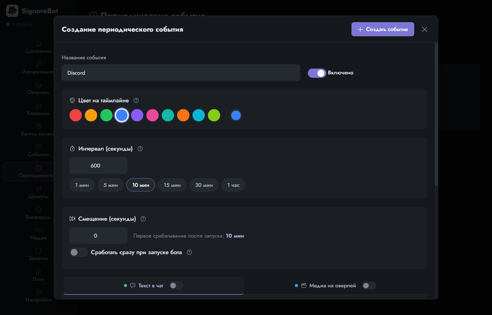
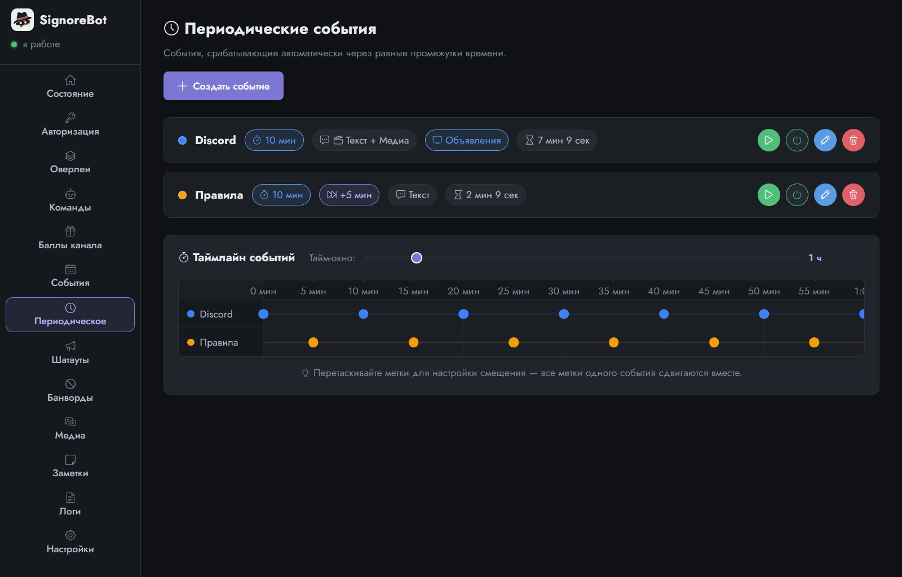
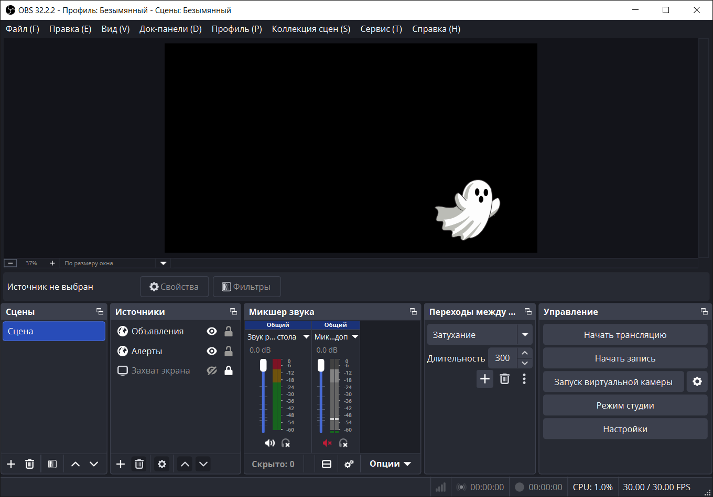

Урок 6 из 9
Периодические события
Последний повод для реакции — время. «Раз в десять минут напомнить про Discord», «каждые полчаса — правила чата». В SignoreBot это периодические события: та же реакция, но по расписанию.
Снова тот же редактор
Вкладка Периодическое → Создать событие. Название — для вас, в чат оно не попадает. Ниже знакомая пара вкладок «Текст в чат» и «Медиа на оверлей» — реакция устроена точно так же, как у команды. Новое здесь только сверху: интервал, смещение и цвет.

Интервал
Интервал — через сколько секунд событие повторяется. Кнопки-подсказки предлагают привычные значения от минуты до часа; минимум — десять секунд, чтобы бот не превратился в спам-машину.
Почему одного интервала мало
Представьте обжитой канал. Со временем напоминаний набирается штук шесть: Discord, правила чата, ссылка на донаты, расписание стримов, канал на YouTube, просьба поставить фолловчик. Каждому вы честно поставили полчаса, чтобы не частить.
Вот что увидит зритель. Двадцать девять минут в чате тихо, потом бот разом вываливает шесть сообщений подряд — стеной, одно за другим. Ваш собственный разговор со зрителями уезжает вверх, а полезные ссылки выглядят как спам от робота: их пролистывают, даже не читая. Через полчаса всё повторяется. Причина простая: все шесть таймеров бот завёл в один и тот же момент, при запуске, и с тех пор они идут нога в ногу.
Значит, событиям нужно разъехаться во времени. Шесть сообщений раз в полчаса — это одно сообщение каждые пять минут, если расставить их по кругу. Именно для этого у события есть вторая настройка.
Смещение
Смещение (его ещё называют оффсет, от английского offset) — сдвиг первого срабатывания. Посмотрим на двух событиях, так нагляднее. Оба с интервалом десять минут: без смещения они сработают одновременно, и в чат уйдут два сообщения подряд. Дайте одному смещение пять минут — и они разойдутся: одно на нулевой минуте, другое на пятой, дальше по очереди. С шестью событиями логика та же, просто шаг между ними меньше.
Отсчёт идёт от запуска бота, а не от момента, когда вы сохранили настройки, поэтому правки в панели ничего не «дёргают»: сетка остаётся на месте.
Флажок Сработать сразу при запуске бота нужен для сообщений вроде «стрим начался, правила такие-то»: один раз при старте, дальше по интервалу.
Таймлайн
Когда событий два и больше, под списком появляется таймлайн — лента времени с метками: в какую минуту что сработает. Та самая стена сообщений видна на нём сразу, ещё до стрима: метки всех событий выстраиваются в один столбик, а наложения подсвечиваются. Метки можно перетаскивать мышью, это тот же способ задать смещение, только наглядный.

Кнопка ▶ на карточке запускает событие прямо сейчас, не дожидаясь таймера, — так проверяют реакцию. Кнопка питания выключает событие, не удаляя: удобно на время особого стрима.
У периодического события реакция такая же двухчастная, как у команды. В примере выше «Discord» не только пишет в чат, но и показывает картинку на оверлее «Объявления» — том самом маленьком слое в правом нижнем углу сцены. Так напоминание видно и в чате, и на самом стриме, а место для него задано один раз в OBS.

Таймеры работают, пока запущен бот: то есть пока авторизованы оба аккаунта и приложение живёт хотя бы в трее. Чат канала при этом может быть офлайн: сообщения уйдут всё равно, так что на время перерыва в стримах события лучше выключать.